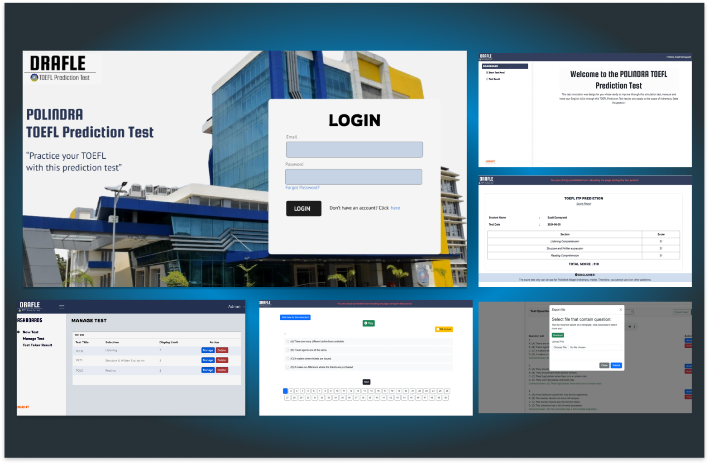

POLINDRA TOEFL
A web TOEFL simulation whose experience flow was built on how the real test is scored, with the documentation and test scenarios to prove it works.
- Role
- UI/UX Designer and Web Developer
- Timeline
- Feb 2024 – Jun 2024
- Type
- Web app, course project
- Tools
- Figma, HTML, CSS, Bootstrap

Research
How TOEFL scoring works, to define the simulation concept and experience flow.
Design
Web UI, logo and supporting assets in Figma.
Quality
Product documentation (SKPL and DPPL) and test scenarios for multiple use cases.
Researching the scoring mechanism
I researched how TOEFL scoring works and defined the simulation concept and user experience flow together with my teammates.
Interface and identity
I designed the web UI, the logo and the supporting assets in Figma.
Front-end build
I contributed to the front-end development with HTML, CSS and Bootstrap, so the design was checked against what could actually be built.
Documentation and testing
I wrote the product documentation (SKPL and DPPL) and test scenarios for multiple use cases to verify the functionality against the requirements.